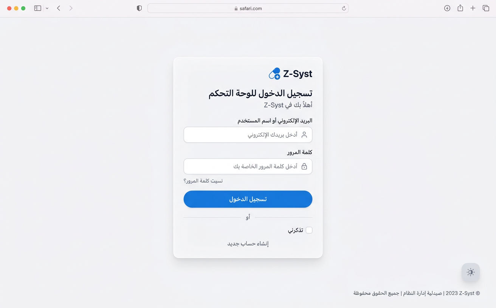
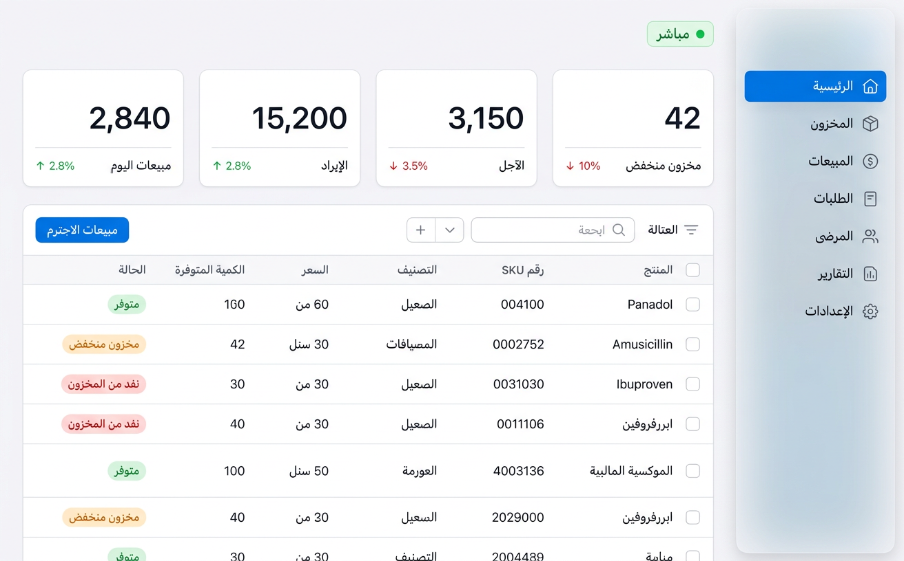
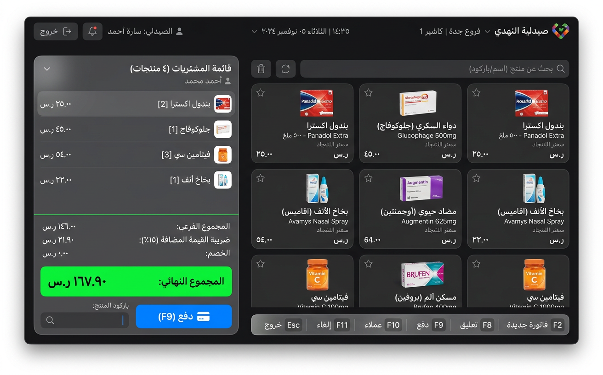
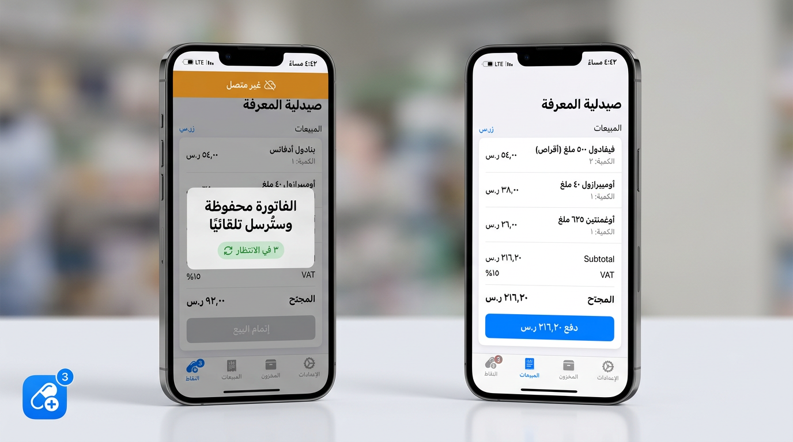

Z-Syst × Apple Design
جولة في المزايا المنفَّذة والواجهات المصمَّمة — بحركة نابضة، مواد زجاجية، وطباعة دقيقة. الأسهم أو المسافة للتنقل.
PWA + بيع أوفلاين
وضع داكن
POS بلوحة المفاتيح
شريط حي
بدائل دوائية ذكية
لغة التصميم
نظام واحد… يوحّد كل شاشة
كل شيء مبني على طبقة apple.css (tokens متغيرة) + apple-motion.js (نوابض مُخمَّدة حرِجًا) — في الوضعين الفاتح والداكن.
−.022em
تتبع العناوين الكبيرة
الدخول
بطاقة زجاجية… وصمت قبل التركيز

اللوحة
لوحة تتنفس: whitespace + بطاقات عائمة

الشريط الحي — منفَّذ فعليًا
«يومك في سطر»… يتحدث كل 30 ثانية
نقطة نهاية GET /api/v1/live/summary (كاش 30 ثانية لكل عمل) يغذي الشريط بأرقام حية بعدّ تصاعدي ناعم — ويتوقف تلقائيًا حين تكون التبويبة مخفية.
أرقام من التحقق الحي الفعلي على المعاينة (2026-11-04)
نقطة البيع — الوضع الداكن
يدير الكاشير اليوم كله بلا فأرة

F2 فاتورة جديدة
F8 تعليق
F9 دفع
/ بحث
مسح باركود تلقائي
PWA — البيع بلا إنترنت
الشبكة تقطع… البيع لا يتوقف

Service Worker — كاش الصدفة
IndexedDB — طابور فواتير
مزامنة تلقائية عند العودة
installable — manifest كامل
حالة التنفيذ
الذي صار حقيقة اليوم
- PWA كاملة — manifest + SW + صف أوفلاين + طابور مزامنة (كل الأصول 200 حيًا)
- الوضع الداكن — tokens معكوسة + زر عائم يتبع النظام ويحفظ اختيارك
- POS بلوحة المفاتيح — F2/F8/F9/Ctrl+Enter// + autoscan للباركود
- الشريط الحي — API + جافاسكربت + partial جاهز للإدراج
- البدائل الذكية — بديل متاح المخزون بتسجيل نقاط + تحذيرات تعارض (score 5 حيًا)
- دورة الشراء الآلي — توليد → موافقة → تحويل أمر شراء P-00001 بـ96 EGP (حية)
- سقالات التكامل — Paymob + WhatsApp + ETA + نسخ سحابي: جاهزة لمفاتيحك
الخطوة التالية
بقيت مفاتيح… لا كود
- رفع ملفات uploads — عدّة جاهزة، أمر واحد من أي جهاز غير مقيد
- Paymob — PAYMOB_ENABLED=true + المفاتيح → الدفع يعمل
- WhatsApp — WHATSAPP_ENABLED=true + قوالب معتمدة → الإشعارات تعمل
- الفاتورة الإلكترونية ETA — المُنشئ جاهز؛ يتطلب تسجيل الشركة لدى ETA
- النسخ السحابي — BACKUP_CLOUD_ENABLED=true → نسخ يومي لـSupabase
Z-Syst — نظام صيدليات يليق بـ٢٠٢٦ 🌿